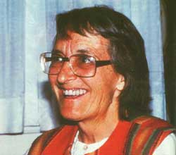

Elisabeth Kübler-Ross is best known for her work with death and dying, and her fame is well earned. More than any other individual in the Western world, she has helped shatter the taboo that-as recently as 20 years ago-isolated the terminally ill in an atmosphere of nervous silence. Meanwhile, the Swiss-born physician devised her celebrated five-stage (denial, anger, bargaining, depression, and acceptance) model of the dying process ... authored the classic book On Death and Dying (as well as a number of other volumes on the subject) ... sparked the hospice movement in the United States ... and helped millions of people learn to see dying as "the final stage of growth" an integral part of life itself.
Most people would agree that the lessons that Kübler-Ross has learned while aiding thousands of terminally ill patients can have meaning for everyone ... because we all have to deal with others' deaths and-ultimately-with our own. But her teachings have a broader relevancy as well. From her work with the seriously ill, Elisabeth has gained a great deal of practical wisdom about how to live more fully and positively. Indeed, a good portion of her work now consists of running intensive, five-day "Life, Death, and Transition" workshops (given through her service organization, Shanti Nilaya) ... in which she attempts to help people express, and then get rid of, internal hostility, fears, and guilt.
When, years ago, several of her patients told her that they'd traveled in spiritual form during near-death experiences, Elisabeth's work took on a further dimension: The previously nonreligious physician-scientist set upon an investigation on of the nature of death itself and of the reality of an afterlife. Subsequently, in keeping with the openness that helped make her a successful healer and counselor, Kübler-Ross has publicly described many of her own perceived out-of-body experiences and spirit guide encounters. (She gained some notoriery for this aspect of her work when she supported, and was subsequently duped by, a pair of self-styled- and apparently unscrupulous-psychic healers. Kübler-Ross has since severed all connections with the couple.)
And while (as Elisabeth herself suggests in the following interview) the reader can make up his or her own mind about the validity of Kübler Ross's personal religious beliefs, we hope that no one will dismiss her more "down to earth" wisdom ... because this short, hardworking ("If you had 50 parents of murdered children to contact, would you watch TV?") and plain-spoken woman has been, in many ways, a healer of the human heart.
Recently, staffer Pat Stone took one of Kübler-Ross's "Life, Death, and Transition" workshops, then followed her to Washington, D.C. and-later on-to her home in Escondido, California ... in order to get enough time alone with Elisabeth to complete this interview. He remarks: "The workshop I attended was a theater of catharsis, a moving lesson to me in the pain, and potential, of human existence. The majority of our 70-member group was motivated by Elisabeth's 'externalization of negativity' techniques to share and, in many cases, to positively resolve deep personal hurts and shames. And, although Elisabeth feels there are some advantages to working through painful personal issues at one of her workshops, she has willingly related many of her methods here ... so that people who wish to do so can use them on their own.
"Kübler-Ross herself was clearly one of the most intuitive, empathic, and loving people I've ever met. However, she was definitely not a mild a mannered 'softy This often very blunt woman demanded honesty from her workshop participants. On the other hand, though, she typically stayed up until the wee hours with needy individuals and, whenever I was with her, never failed to respond to the people who seemed to be constantly approaching her with appeals for help. Even during the last portion of our i interview-when we were in the secluded privacy of her mountain home (where she somehow finds time to tend her garden and goats)-she was often interrupted by the telephone. (After advising one such caller, a woman whose brother had just been killed, how to deal with her own grie f, Elisabeth suggested that the woman attempt to contact the murderer as well. 'That poor man's whole life will now be ruined. Try to have compassion and see whether you can help him with his pain.)
"And , amazingly enough, she expends all this energy on a diet that 'generally consists of less than one full meal a day, attributing her tire I lessness to the fact that she loves her work and to her belief that once an individual cleans the negative emotions out of him- or herself, he or she will discover an abundance of energy. Without meaning to say that she's faultless, I have to conclude that, in my opinion, Elisabeth KüblerRoss is a saintly woman. "
We hope you enjoy, and gain from, what she has to say.
PLOWBOY: Elisabeth, you're credited with breaking through our culture's reluctance even to consider death, and with helping people learn to accept the end of life openly, but I'd have to say-after spending a week in your seminar-that the emphasis of your work is really on living!
KÜBLER-ROSS: Of course. It's living that's difficult. People who have lived fully are never afraid of death.
So it's much more important for me to teach people how to live than it is to help them to accept death. In fact, when I started what has since become my life's work, I wasn't even concerned about how to deal with death and dying. No, when I first left home, a Swiss girl hoping to do relief work in Germany and Poland at the end of World War II, I wanted to learn what could cause people to kill hundreds of thousands of children in concentration camps. How could normal, average men and women-who were mothers and fathers themselves-do that without any qualms ... and then go home and worry when their own children caught chicken pox?
PLOWBOY: But how does that experience tie into the work you're doing now?
KÜBLER-ROSS: At Maidanek-a concentration camp where 960,000 children were killed-I met a Jewish girl whose grandparents, parents, and brothers and sisters had all died in the gas chamber. She was saved from dying with them only because there was no room left in the chamber to squash in another person. As a result of that horror, she became determined to survive ... so she could tell the world about all the atrocities committed by Hitler's Germany. Yet she told me that when the liberating army finally arrived, she suddenly realized that-if she did what she'd intended-she'd be no better than Hitler himself... because she, too, would be spreading hate and negativity.
This young girl touched my life more than anybody ever had, by teaching me that there's a "Hitler" in every human being. My first reaction to that concept was, "Oh no ... not in me! I'm a very nice person. I want to help the world." But soon after meeting her, I left Germany and headed toward Poland, where a typhoid epidemic was in progress. At that point I hadn't had any food for three days, and I suddenly realized that if a child had walked by with a piece of bread, I would have stolen it!
Then I began to understand what my Jewish friend had been saying. As a result, when I went back home, I studied medicine and tried to figure out how to help people to eliminate some of the negativity from their lives. When I married and came to America, I began working-quite successfully-with chronic, supposedly "hopeless" schizophrenics, and then with multiple-handicapped children. And, as time went on, I started slipping into death-and-dying work, because I found that the terminally ill patients in institutions were just as neglected as were the schizophrenics or the handicapped children. Hospital personnel didn't even refer to them by name ... they'd talk about "the pancreas in Room 17" when they meant a person, a human being with a family and children, who had terminal pancreatic cancer!
PLOWBOY: You seem to have been drawn to the most seriously ill or disturbed patients.
KÜBLER-ROSS: I guess that's because I grew up in a very nice, affluent home but I was a triplet, and felt I had no real identity. Do you understand? Among the earliest memories of one of my sisters is the time my father gave her a bath twice and skipped me.
PLOWBOY: Is it sometimes best for terminally ill people to die at home.
KÜBLER-ROSS: I'm very much in favor of letting patients die at home. When you've done all you can to prolong or save life, you should then let people spend at least their last few weeks in a familiar environment ... a place where they can have unrestricted visits or smell the aroma of soup or coffee in the kitchen, and where they can have their favorite dog or cat on their knees or see their children or grandchildren at play.
PLOWBOY: How can you tell when someone should be allowed to go home to die?
KÜBLER-ROSS: A good doctor has to be able to judge when further medical treatment is purposeful And the family needs to listen to the patient to know whether, for emotional reasons, taking him or her home is the right thing to do.
I can remember telling an old man how hard we were trying to save him, and he said, "Could you try a little less hard?" After we laughed over that remark, he added, "All I want is to be left in peace. I've lived a long life and think I'm entitled to stay home." And he was right. On the other hand, though, a depressed cancer patient who has a good chance to make it into remission, but is so discouraged that he or she just wants to give up and go home, may need to be told to wait until the potentially helpful treatment is over.
PLOWBOY: I imagine many families are overwhelmed by the thought of caring for terminally ill relatives.
KÜBLER-ROSS: Yes, families often need help. Frequently, they'll need an "outside" person to assist in caring for a patient, so-for example-the wife of a dying man can still get to the hairdresser, or a teenager can go out on a date. It's important not to make the house into a morgue in such a case, because the other people living there still have to continue to lead normal lives. If they're not allowed to, those individuals will quickly become exhausted, and very bitter.
PLOWBOY: How does a family find such a helper?
KÜBLER-ROSS: If they really look, they'll find someone-perhaps a neighbor or friend-that they and the patient feel comfortable with. As an example, I once paid a house call to a young Swedish lawyer who had ALS, Amyotrophic Lateral Sclerosis disease. He was paralyzed from the neck down and couldn't talk. His wife and two small children were totally worn out from caring for him, and they were about ready to give up and send him to the hospital. The man sensed his family's desperation, and with the help of a speakingboard-a wonderful tool that helps such paralyzed people communicate-had begged to see me.
After visiting him, I asked his wife exactly what kind of assistance she'd need to be able to continue keeping her husband at home She said, "I need someone who can take care of my husband from 8:00 p.m. to 8:00 a.m. every day, so I can go to bed and not have to worry all night." Well, I went on to teach my scheduled workshop and met a wealthy American there who had "workshopitis" that's what I call the attempt to grow and become spiritual by attending lots of these sessions. When this man told me that he really wanted to help humankind as I had, I informed him that his first job was going to start that Friday night, and would entail 12-hour shifts with no pay.
That workshop member reported to the needy family on Friday, stayed with the ALS lawyer until he died, and everyone involved was immeasurably happy about the arrangement!
PLOWBOY: But the average family doesn't have Elisabeth Kübler-Ross around to hunt up idle, noble-minded helpers for them.
KÜBLER-ROSS: You don't have to be Elisabeth Kübler-Ross to do it! Ask around! Spread the word to church groups, the scouts, or whatever organization you're affiliated with. There are always people who want to do some service work and be needed. Look ... you'll find the help you seek.
PLOWBOY: Elisabeth, what should people do for themselves once they've lost a loved one?
KÜBLER-ROSS: First, you should prepare before the person dies. Face the fact that you won't have your next of kin forever, and realize that now is the time to say the things you want to say before it's too late.
To put it simply, if you love somebody, tell them ... then you can skip those schmaltzy eulogies! When the person dies, you will have grief, but not grief work. PLOWBOY: What's the difference between those two emotions ... and how does a person deal with each one?
KÜBLER-ROSS: Grief is simply natural sorrow, and the way to deal with that is to let yourself cry. Eventually, you'll heal ... if you give yourself the time you need to be sad and remember and mourn.
Grief work, on the other hand, involves the fear, guilt, and shame you have if there are things you think you should have done for the dead person but never did. The only way to get rid of those feelings is to share them with somebody you really trust. If you discuss the shame and guilt honestly, it will likely be followed by a tremendous flood of tears. Then all you have to do is to forgive yourself, and you'll be able to let go of the feelings. If you can't get rid of that emotional pain, though, you probably have a need to continue punishing somebody ... most of the time, yourself. And that wasted energy will eventually make you ill.
PLOWBOY: In the "Life, Death, and Transition" workshop I attended, you helped people to deal with their grief work, to learn to forgive themselves. Could you explain what, for you, the overall purpose of those workshops is?
The only way to heal this world is to heal yourself.
KÜBLER-ROSS: I am trying now to show people how to diagnose the Hiders inside them and to become, symbolically speaking, Mother Theresas ... so that they can live fully and pass love, instead of negativity, down to their children.
Healthy people, you see, don't react they act. They're in control of their lives. But if you spend your whole life reacting to others, you never live your own life. You become a cripple. The fastest, easiest way to become emotionally healthy is to diagnose your own unfinished business, to admit the existence of those negative feelings that block you from acting in positive, constructive ways.
PLOWBOY: Are there other negative feelings besides what you call grief work?
KÜBLER-ROSS: As I see it, there are five natural emotions ... and each one has a negative, unnatural counterpart. The first basic positive emotion is fear ... which is a gift from God that helps preserve our lives. However, I believe that the only two natural ones are fear of failing and fear of loud noises. All the rest-including concern about what your neighbors think of you, being scared of your boss, and other phobias-are unnatural. They only drain your energy and lead to ill health.
PLOWBOY: How can a person get rid of such unnatural fears?
KÜBLER-ROSS: Scream. If you live in the country, go out in the forest. If you live in an apartment in New York City, get in your car, close the windows, drive down the highway ... and scream at the top of your voice. When you do that, you can get in touch again with all the horrors you've repressed. It will feel really good, and provide you with relief.
Grief, the second natural emotion, is also a God-given gift, and it helps us deal with all the thousand little deaths in life. And tears are the blessing that helps us get rid of grief. The unnatural corollary to grief is, of course, guilt ... and I've already mentioned some ways to deal with that.
The third natural emotion is anger. This, too, is a God-given gift. It's my opinion, though, that natural anger lasts only 15 seconds. Whenever you're mad for longer than that, it's because you're full of leftover, unfinished anger from something else. If you don't get rid of that, you will end up becoming a bucket full of rage, hate, and lust for revenge, and you'll eventually get very sick.
PLOWBOY: How do you get rid of anger or repressed rage?
KÜBLER-ROSS: The best way is to take a piece of rubber hose and beat all your hate and anger against an old mattress or pillow. You have to verbalize your feelings while you do this ... you can't just beat in silence until your muscles are tired. And don't be afraid to act excited or violent while striking the pillow, because you're not hurting anybody. Instead, you're probably preventing yourself from hurting somebody in the future.
Now all of these techniques work better if-at least, at first-you have someone to help you get your feelings out. It has to be a person who has compassion, someone who won't preach to you and make you feel more guilty.
PLOWBOY: How can we figure out what might be causing our repressed anger?
KÜBLER-ROSS: Keep a diary and note anytime that you get overly upset by somebody. After a while, you'll begin to see the pattern of what bothers you and be able to deal with it. You see, whenever you react strongly to people, when someone is able to "push your buttons", it's a gift from the Creator ... in the form of a signal to you to get in touch with your own unfinished business.
Let me tell you what happened to me once. I had to do a workshop one year in Hawaii ... and it was scheduled over Easter, a time when I really wanted to be with my family. The man who organized it was a tightwad. He charged us extra for every little service 50 cents for each sheet of paper we used for our spontaneous drawings and 10 cents more for each crayon ... 25 cents for the little cups we used for coffee. He could have simply asked for $200 more for expenses, and I wouldn't have minded, but his string of tiny fees just kept making me angrier and angrier.
By the last day of the workshop, I was so incensed by this man that if he had asked for one more quarter, I would literally have killed him, right then and there. I mean it. And here I am such a "good" person, someone who goes around the world teaching unconditional love!
When I arrived back home, I was so drained by my anger that I was almost physically sick. I didn't know why I was so upset, except that I felt maybe I was "allergic" to cheap men. At any rate, my co-workers from my Shanti Nilaya organization met me and asked how the workshop went. I didn't want to talk about it, so I said, very curtly, "Fine." They asked again, and I said, "Fine, fine. G.D. fine."
Now one of our rules at Shanti Nilaya is that we all have to get rid of our unfinished business-our repressed negativity-but another rule is never to ask anything more than three times, because by doing so we may deprive someone of their choice to avoid the subject. I knew if I could last through one more question, they couldn't bother me with it anymore. However, instead of asking me about the workshop, one of my associates said, in a sickeningly sweet voice, "Well, tell me of your visit from the Easter Bunny, then."
That let the cork out of the bottle ... I exploded. After eight hours of crying and talking with my friends, I was able to empty a whole pool of negativity and get in touch with something from way back in my childhood.
You see, as I've indicated before, my parents never gave me much affection, so eventually I rejected them and lavished all my love on some pet bunnies I had. Every once in a while, though, my father-who was a thrifty Swiss-would get a taste for rabbit meat ... and order me to carry one of my bunnies to the butcher shop. The clerk there would slaughter and process the animal, and then I'd have to walk all the way back home, carrying a bag filled with the warm meat of my dead pet.
Finally, I had only my favorite bunny, a black one, left ... and eventually my father told me I had to sacrifice him. Oh, I let that rabbit out of his cage and tried to get him to run away, but he loved me too much to flee. So I had to carry him all the way down to the butcher shop. That man cut up my animal and came back to me and said, in a matter-of-fact voice, "It's a pity you killed this one. She was pregnant. In another week she would have had babies."
I didn't say a word-or eat a bite-at supper that night ... because I was determined not to let my family see the deep pain I felt. And I continued to repress my anguish over that childhood sorrow so completely that I eventually forgot it ... until the actions of that cheap man in Hawaii brought back my angry feelings. Then, through my intense work with my friends, I was able to release that negativity, so I'm not likely ever to murder a man for miserliness! In fact, I can now bless that individual for what he helped me learn about myself.
And that's why I've said that every man and woman in every one of our prisons is there because of his or her own "black bunny". So I believe that if someone else is a criminal, then I am a criminal, too.
PLOWBOY: Let's move on now to the other two natural emotions. What are they?
KÜBLER-ROSS: Jealousy, the fourth natural emotion, is a healthy urge to improve, to be able-for example-to read or roller-skate as your big sister does. When it's repressed, though, it turns into envy and harmful competitiveness ... and is often associated with a lot of shame and guilt. To get rid of those unnatural feelings, you have to be able to recognize when you act out of envy and then try to connect that feeling to its origins-likely from your childhood-so you can understand how you became that way. Once that's done, you can look at your own gifts, see the ways in which you are special and unique, and let go of the old envy.
The last, and most important, emotion is love. It has two aspects. One is the need to hold and hug, to feel very secure and wanted and physically close. And the other aspect of love is the ability to say ,.no", to provide firm, consistent discipline.
Most of us are raised with "I love you ifs". I love you if you become a doctor , if you do well in school, if you clean up your room. We try to buy people's love with compliance, by doing things to get it. Well, that's not love, that's prostitution. Real love has no claims or expectations. It doesn't judge: It listens and respects the individual as he or she is. Real love is unconditional love.
I had a case where an 11-year-old boy came home from school with one bad grade on his report card. His father saw that, and said, "So you don't care. Well, if you don't care, we don't care." He ordered the rest of the family to ignore the boy that night. The mother didn't even tuck him in bed. The following morning the child was dead. He had committed suicide. The lack of unconditional love killed that 11-year-old.
And he's not alone. Suicide is the third most common cause of death among American children today.
PLOWBOY: Children are very important to you. Do you feel that people can apply the lessons you're teaching-about dealing with negativity-to parenting?
KÜBLER-ROSS: Yes, they can if they keep in mind that children who grow up with unconditional love and firm, consistent discipline-both in equal measures-have few problems dealing with life. You can love a youngster and hate some part of his or her behavior. You don't belt or spank or beat the child for it, though. Kids don't learn from harsh words or beatings. Instead, every time a child does something wrong, try to turn your response into a firm expression of love by meting out an appropriate consequence, immediately.
PLOWBOY: Could you give me some examples of "appropriate consequences"?
KÜBLER-ROSS: If your three-year-old boy-for instance-acts up too much when you go to a restaurant, don't take him the next time you eat out. Show him that he has to stay home with a babysitter until he is ready to behave in a restaurant. If your little girl misuses or carelessly ruins a toy, don't replace it. Tolerate her pain and crying, and the guilt trip she'll try to put on you, and say, "That's terribly sad. Next time you have something you love, don't let that happen to it."
Or if, when it's time for your son to go to bed, he gets angry for more than 15 seconds or tries to hit you, give him a rubber hose and tell him to go beat his mattress ... let his anger out ... and then go to bed. If he sees you're not screaming at him or spanking him for expressing his natural anger, he'll learn that there's a certain time when he has to go to bed, and that there's a safe place for him to get mad and that will be that.
Naturally, you also have to serve as a living example of all these ideas. If you go around screaming and yelling and hitting, you can't honestly expect your children not to learn that from you. In fact, a parent's greatest gift to a child is simply to work on his or her own unfinished business. If you want to raise healthy children, you first have to heal the child inside of you. If you were beaten by your parents, instead of doing that to your offspring-imposing your physical power on totally helpless children and calling it authority find an outlet for your rage and anger. Go chop wood or beat a rug and curse whatever you need to curse. Then you can come back and deal with the problem without overreacting. Remember, though, that children should always know they're loved, even though they also know that you may not, at times, love their behavior.
In addition, watch your own actions, and-especially-see how consistent you are in your punishment. Children get very confused if one day everything is fine because a parent comes home in a good mood, but the next day they do the same things they did the day before and suddenly get slapped for it. If you come home grouchy from work, try saying, "I've had a terrible day, so you'll probably have to be twice as quiet as usual, but I hope I'm not often like this." The children will learn to adjust to that quickly. And then, if-someday-one of them tells you that he or she is in a bad mood, you should respect the child's feelings, too.
Last, don't go overboard in protecting your children from the hardships of life. If you raise your young ones like plants in a greenhouse, sooner or later, when those plants have to come out into the open, they won't be able to stand the cold. To put it another way-as one of my favorite sayings goes-"Should you shield canyons from the windstorms, you would never see the beauty of their carvings."
PLOWBOY: Elisabeth, as you've portrayed it, getting rid of one's own negativity sounds like a lot of work.
KÜBLER-ROSS: It is, but if you want to weed your garden, you have to bend. You have to get your hands dirty. Yet, in America, working to promote one's emotional health is a completely neglected concept. Instead, after a person has become seriously disturbed, he or she is given tranquilizers or locked up. That's horrible. What I practice and teach is simply preventive psychiatry ... and we need much more of it. We should have screaming rooms in every hospital, staffed by people who've lost loved ones themselves, so families can have a place to unload their grief after someone dies. Schoolteachers should use the technique of interpreting spontaneous drawings of children as a screening tool to learn, early on, which ones need help.
PLOWBOY: What happens if a person is able to get rid of his or her negativity?
KOBLER-ROSS: As you work on your emotional quadrant-on your unfinished business-your own intuition will grow and bloom, and you will become more and more spiritual. You see, you don't have to go to school or meditate to develop your spirituality. It's been with you since birth, and it just has to evolve. If you can get rid of the weeds that are strangling your ability to get in touch with your intuitive, spiritual self, that part of you will grow naturally.
Look at me. I'm a Swiss hillbilly. I come from a background that's almost opposite to that of a stereotypical Californian. I can't sit still and meditate. I've never been to India or had a guru, yet I've had about every mystical experience there is. And it's important that you know that will come ... that you can see what's in store for you if you weed your garden.
PLOWBOY: Elisabeth, let's talk about the moment of death itself. Based on your experience and research, what would you say happens when a person dies?
KÜBLER-ROSS: There are three stages of dying. The first occurs at the physical level, the one that concerns your normal consciousness and your body ... which is like a cocoon. When you are mortally injured, in a coma or whatever, and you lose consciousness, your brain ceases to function. The real you then emerges from your physical body and moves to the second, psychic, level ... like a butterfly emerging from a cocoon. At that point you have what I call all-awareness: Your body feels whole, and you are completely and totally aware of everything going on around you. Blind people can even see when they enter the psychic stage of dying.
And-though it may sound strange-all this is quite easy to verify. I've studied thousands of cases of out-of-body and near-death experiences in which people traveled to the psychic level. In many instances, when these patients regained consciousness, they could tell everything that had been going on around them. The blind ones could tell me what color ties their doctors had been wearing. An old woman who had been in a complete coma told me that the nurse had said, "That old bag ... I hope she takes off." Many researchers have noted this sort of thing.
After hearing about these experiences, one begins to realize that no human being can die alone, for three reasons. For one thing, once you're out of your physical body, time and space do not exist, so you can travel to your living loved ones at the speed of thought. Second, you will see your family and friends who preceded you in death. You will meet them, you will recognize them, and you will be surrounded by more love than you can imagine.
And this, too, is easy to verify. I checked it out by collecting cases of tragedies in which a seriously injured child regained consciousness a good while after an accident had claimed the lives of other members of the family. Such youths would talk about what happened while they were unconscious ... saying something like, "I saw Mommy and Peter waiting for me," thereby identifying those people who had died.
The third reason why you cannot die alone is that you have a guardian angel. This spiritual guide-who's assigned to you and to you alone-helps you during your life, trying every means he or she can to keep you on course, so that you will do what you've committed yourself to do in this lifetime. When you die, you'll meet this guardian angel and experience instant recognition along with the greatest love you've ever felt.
PLOWBOY: But how can one scientifically verify the existence of these spirit guides?
KÜBLER-ROSS: You or I can know these things from personal experience, but right now, science cannot verify them ... because our technological knowledge doesn't yet have tools, or even a language, to deal with them. That doesn't mean that the things I tell you are not scientific or true, though . . . the fact is that science is still in its baby shoes!
However, our technological capabilities are improving, and I'm absolutely sure that, in the next decade, we'll be able to take an energy photograph of the separation of the "butterfly" from the "cocoon"-the severing of the cord that connects the spiritual and physical-that occurs at death.
PLOWBOY: But is it possible to reach, or contact, this level without dying or having a near-death experience?
KÜBLER-ROSS: The psychic level can be reached, and manipulated by humans, but I'm very opposed to teaching such things, including techniques that help one autogenically induce an out-of-body experience. Now I don't feel this way because psychic energy is, in itself, bad. It is not bad, but people misuse it dreadfully. I'd say that anybody who fools around with psychic energy has a 90% chance of becoming a phony. But, you understand, I am also a burned child. I've seen people misuse their psychic gifts.
Besides, what's the point of deliberately trying to bring about such experiences? As long as you do only work that you really love to do, and do your job with faith and trust, you will always get whatever experiences you need for your own evolution. So why sidetrack yourself by spending years "shopping" for some psychic or spiritual event that's not meant for you yet? That's like trying to study highschool math before you learn any arithmetic in elementary school.
PLOWBOY: Let's move back to dying. What's the third stage of death?
KÜBLER-ROSS: At the end of the second stage, the person goes through something that-for him or her-represents transition to the third, or the spiritual, level. That symbol may be a mountain pass, the Ganges river, a tunnel, the pearly gates ... every individual's perception of the transition will be culturally determined. At any rate, at the end of that tunnel or whatever, you will see a light. Once you have a glimpse of it, you'll have no fear of dying ... no way. In fact, experiencing that light will give you an overwhelming feeling of love and bliss.
Then when you finally die, the invisible energy cord that connects the cocoon to the butterfly is severed . . . and you complete your journey to the spiritual level. This level is in the realm of God. It can't be manipulated in any way by humankind.
Once there, you realize what humanity could be. You review all the words, thoughts, and deeds of your life and know how they've affected others. You learn that the summation of your life is the consequence of every single choice you've made. You see whether you've learned the lessons you promised yourself to learn in this lifetime so you can "graduate" . . . or whether you will need to come back to earth to try again. You see, you cannot return to God with dirty hands, because you're responsible for your actions. You cannot kill, for example, and then think you can sit in heaven for eternity. You have to come back and make good for all your mistakes.
PLOWBOY: Elisabeth, I don't mean to deny any of what you are saying-actually I feel unqualified to judge any of it-but it does seem clear that our discussion has now moved into the realm of personal religious beliefs. Do you have a name for your spiritual views?
KÜBLER-ROSS: Yes, practicing Christianity.
PLOWBOY: I'm sorry, but I never thought of Christianity as including reincarnation and spirit guides.
KÜBLER-ROSS: Oh yes. Reincarnation was taught in Christianity for hundreds of years. The teaching of it was eventually forbidden by the First Ecumenical Council, for purely political reasons. And the Bible is full of references to guardian angels!
PLOWBOY: But most orthodox Christians also have a vision of damnation in their picture of the universe. In fact, Jesus himself referred to the fires of hell.
KÜBLER-ROSS: I believe that was symbolic language! It was meant to describe the fact that you will be so sorry when you review your life and see how many times you were given chances to live, to give to share ... but looked away. It's my contention that God is all love: made up of so much love you cannot even conceive of it.
Yet many so-called Christians judge other people. And many churches use fear and guilt to fill their pews. Why? Christianity teaches us to love our neighbors as ourselves. It does not discriminate or condemn. Christ, by his example, was the best teacher of unconditional love imaginable. He accepted and loved and healed and worked ... everywhere he went. He didn't ask people whether they attended such and such a church before helping them!
PLOWBOY: I'm sure you've taken abuse from many people, religious and otherwise, for some of your spiritual views.
KÜBLER-ROSS: Oh yes. But I remember that, back in 1968, I was spat at in the hallways of hospitals for helping dying patients . . that my work was considered "horrible" then. And look how that's changed ... there are now more than 100,000 courses being taught on death and dying!
PLOWBOY: Does it bother you that some people may reject your insights about living and dying because of your unusual opinions concerning an afterlife?
KÜBLER-ROSS: Let people believe what they're ready to believe. It's not my place to tell them what to think. I have a practical mission in life to love my neighbor as I do myself... and by my example, I try to teach that. If people can't accept something I say, they can throw it out and claim, "It's a pity she became kooky later on." They'll know the truth, anyway, when they make the transition themselves!
In addition, I believe that the fact that I'm willing to discuss my psychic and spiritual happenings and beliefs in front of crowds of 15,000 people also helps others get the courage to share their experiences. Now, I can go to Southern Baptist country and hear a minister who attempted suicide describe how he can no longer be the minister of his church because he was enveloped in such total love upon encountering the divine light that he can no longer teach condemnation.
More and more people today are having experiences similar to what I've had and describe. In fact, I believe this is going to develop exactly as did my early work in death and dying. Twenty years from now, everybody will know these things ... everybody.
PLOWBOY: You're saying that, in just two decades, everyone will see the importance of getting rid of his or her negativity and of practicing unconditional love ... and will agree with your views concerning an afterlife?
KÜBLER-ROSS: Oh yes. I can see the changes taking place-and at a rapid rate-right now. Everywhere I go, I'm seeing more and more people who care, who have compassion, who are able to face their own negativity honestly and do something about it. Also, many organizations in which people try to help each other rather than simply make profits are beginning to spring up.
This doesn't mean that the road ahead is going to be easy, though. But the tide has turned since the war-torn days of Vietnam and Kent State. Indeed, I hope I live to about the year 2004. I think by then .the big changes will have occurred, and I'll be able to retire.
PLOWBOY: What sort of changes do you foresee?
KOBLER-ROSS: Primarily, I see growth in human awareness ... including our finally learning who we really are, and I also see us beginning to put our energy into constructive projects-growing vegetables, trees, and flowers, say-instead of creating military machines. I think we're approaching a time when the world is going to be much, much more fair. I truly believe that, within four or five generations, we'll ultimately outgrow war and hate and weapons.
PLOWBOY: What do you see as your part, your mission, in bringing that change about?
KÜBLER-ROSS: I see myself as a translator and a catalyst. I can help trigger reactions, but then the reactions develop by themselves. I'm here to help people get rid of fear and guilt, so they can live fully and not be afraid of living or dying ... to help people to know what it means to love thy neighbor as thyself ... and to convey to people that death, as an end to things, does not exist.
PLOWBOY: And what is the main piece of advice you have for others?
KÜBLER-ROSS: The only way to fight negativity is not to curse the darkness or the Hitlers-because that is, itself, negativity-but to look at the Hitler inside of you. The only way to heal this world is to heal yourself. So with every choice you make, try to take the highest choice, the one that helps the most people.
Let me put it this way: Just ask yourself, each day, "If everybody would live as I have today, would the world be a better place?"
There are many hundreds of self-help and service organizations related to the field of death and dying today. Here are just a very few of the available resources.
Candlelighters Foundation
An international organization for parents of children with cancer.
Compassionate Friends
A self-help group for parents who have experienced the loss of a child
Parents of Murdered Children
A self-help group for those who have survived the death of someone close
|
 |
|
|
|
|
|
|